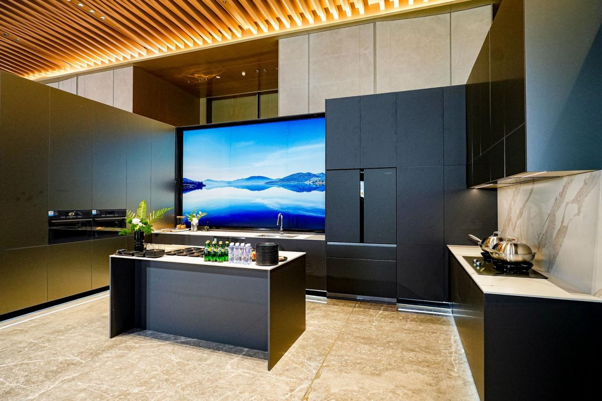

厨房智能硬件 / 竞品场景联动
海尔发布AI衣食场景，把储鲜、菜谱与烹饪设备串起来
宁波大会展示冰洗厨新品，厨房竞争继续从单台设备转向一餐中的连续使用。

11月7日，海尔智家大白电全球创新大会在宁波举行，发布AI衣食生活场景方案。据大会报道，冰箱可识别食材、建议存放位置，并与厨电衔接菜谱推荐和烤箱预热；烟灶侧则展示油烟感知、风量调节与风险识别等功能。
现场同时展示Seeker、麦浪、云溪厨电套系及卡萨帝典藏系列，涵盖烟灶联动和全嵌空间等方向。这些属于品牌发布与展示，具体兼容机型、上线范围和实际效果仍应按产品说明核验，不能据此认定家庭烹饪已完全无人化。
澎湃新闻｜海尔大白电AI衣食场景发布报道 · 2026-11-07 11:55（北京时间）青岛新闻网｜海尔宁波大会现场演讲报道 · 2026-11-07 16:40发布会：11月7日；两篇报道分别为11:55与16:40，均在近24小时窗口内。产品能力为发布方披露。